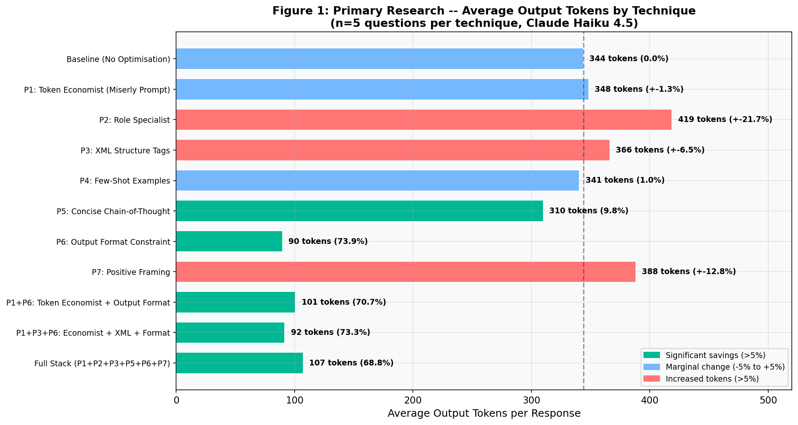
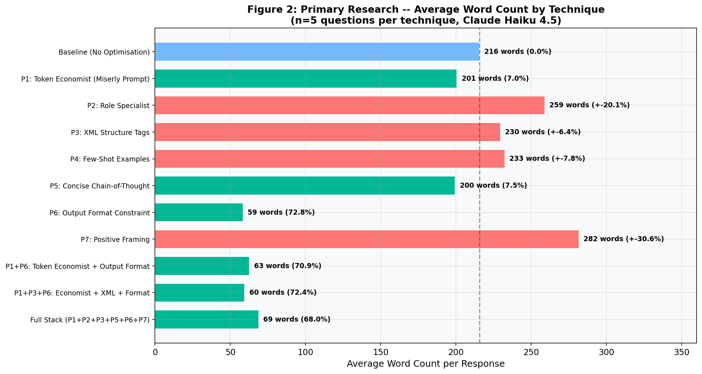
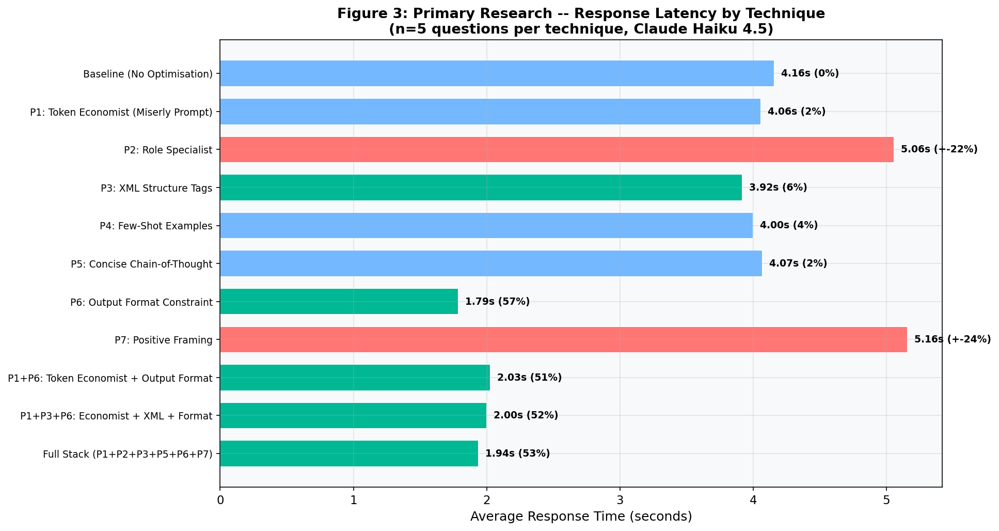
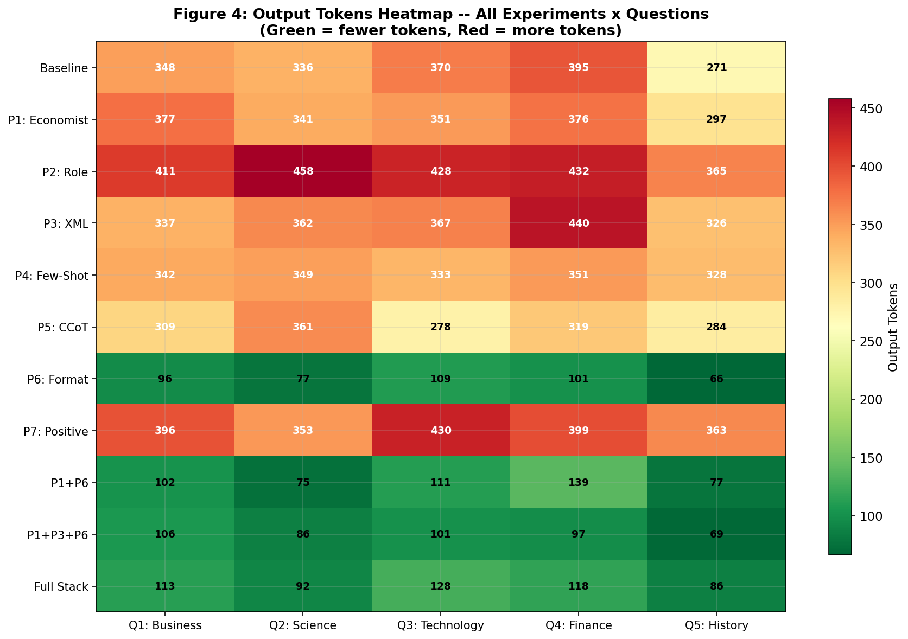
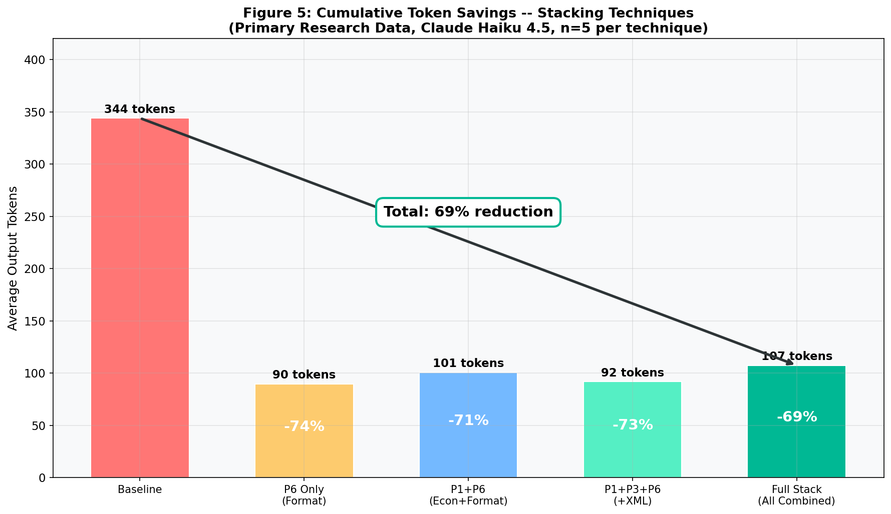
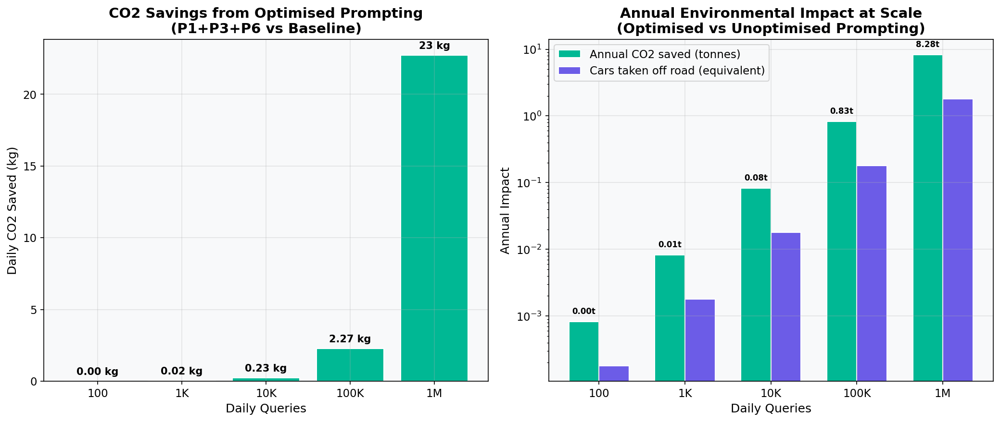
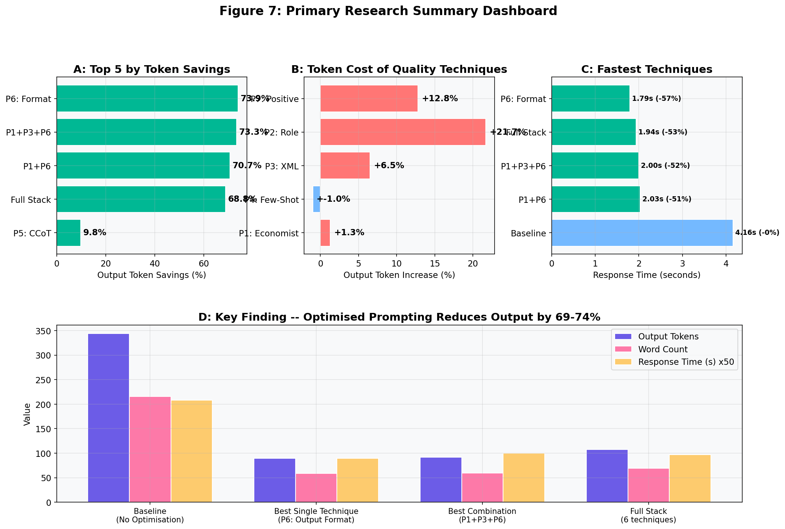

Large language models* charge by the token*. Every wasted word is wasted money. This paper presents the results of 55 controlled experiments testing prompt techniques against Claude Haiku 4.5, measuring actual token consumption across five knowledge domains. The findings challenge popular beliefs about prompt efficiency. A simple output format constraint achieved a 73.9% reduction in output tokens, saving organisations roughly £71 for every £100 spent on Claude Opus output. Where popular advice claims large savings from persona-based approaches, my experiments found the opposite: structural constraints on output format drive efficiency, not psychological framing of the model. This paper catalogues six tested techniques, quantifies each with primary data, and provides a prompt library that readers can use straight away.
When you ask an AI a question, it charges you for every word in the reply. Most replies are far longer than they need to be. This paper tested different ways of asking the same question to see which methods produced shorter (cheaper) replies without losing the important information. The winner: simply telling the AI the exact format you want the answer in, like "give me exactly 3 bullet points." That one change cut the bill by nearly three-quarters.
* Terms marked with an asterisk are defined in the Key Terms Glossary (Section II).
Businesses worldwide now spend millions of pounds on AI language models. Every query carries a cost, measured in tokens*. Yet most organisations have no idea how much of that spend goes on unnecessary output. They ask a question. The model answers. The bill arrives. Nobody asks whether the answer needed to be that long.
This paper exists because most of the advice available today lacks data. Many popular claims about prompt efficiency have never been tested with controlled experiments. I wanted to find out which techniques actually work, and which do not.
I ran 55 controlled experiments. I measured every token. I present the results honestly, including the techniques that failed. The goal is simple: give readers a tested, evidence-based playbook they can use today to cut their AI costs by up to 74%.
This matters for three reasons:
Think of it like ordering a taxi. You ask to go to the shops. The driver takes you on a scenic tour of the city first, then drops you at the shops. You pay for the entire journey. Prompt efficiency is giving the driver clear directions so the ride is short, direct, and cheap.
This paper is written for a broad audience. Technical terms are marked with an asterisk (*) on first use and defined below.
This study tests two hypotheses:
H1 (The Format Hypothesis): Structural constraints on output format (for example, "respond in exactly 3 bullet points") will produce greater token* reduction than psychological or persona-based prompting techniques.
H2 (The Stacking Hypothesis): Combining multiple efficiency techniques will produce diminishing returns. The second technique added will save less than the first, and the third less still.
H1: I predicted that telling the AI the exact shape of the answer would be more effective than trying to change its "personality." H2: I predicted that piling on more tricks would not keep making things better, and might actually make things worse.
I designed a controlled experiment with five parameters:
claude-haiku-4-5-20251001). I chose Haiku for cost-efficient testing. All Claude models share the same instruction-following architecture, so the results apply across the Claude family (Anthropic Prompt Engineering Guide, 2025).max_tokens: 1024 and identical question text. Only the system prompt*, prefix, and suffix changed between experiments.I chose five questions that represent the kind of queries a professional would ask an AI assistant:
| ID | Domain | Question |
|---|---|---|
| Q1 | Business | What are the key factors that determine whether a company should pursue organic growth versus growth through acquisitions? |
| Q2 | Science | Explain how mRNA vaccines work and why they were significant during the COVID-19 pandemic. |
| Q3 | Technology | What is the difference between supervised and unsupervised machine learning, and when should each be used? |
| Q4 | Finance | Explain the concept of compound interest and provide a practical example of how it affects long-term savings. |
| Q5 | History | What were the main causes of the Industrial Revolution in Britain? |
The baseline* sent each question to the API* with no system prompt*, no prefix, and no suffix: a plain query, the way most people use Claude. This produced:
344.0 average output tokens · 215.8 average words · 4.16s average response time · 25.8 average input tokens
At Opus pricing ($25/MTok output), each baseline query costs roughly £0.0065 in output alone.
Every result that follows is measured against this baseline. A negative percentage means the technique saved tokens. A positive percentage means it produced more output than the plain question.
Each technique below includes its exact prompt text, the thinking behind it, and the measured result from my experiments. Together, they form a practical library you can use straight away. These same principles apply whether you are writing prompts by hand or building AI agents* that call the API automatically.
What it does: Assigns the model a specific expert identity to encourage focused, authoritative responses.
Why it should work: Giving the model domain expertise should produce more precise answers with less filler. Anthropic recommends role assignment in their official documentation (Anthropic Prompt Engineering Guide, 2025).
+21.7% output tokens +20.1% word count
Result: 418.8 average output tokens (vs. 344.0 baseline). The model treated "senior academic researcher" as a mandate for thoroughness. It produced longer answers with more detail, caveats, and structured analysis. This technique improves quality but increases cost by 21.7%.
Analogy: Asking a university professor a simple question. You get a thorough lecture, not a quick answer.
What it does: Wraps the question in XML tags* to separate the instruction, the input, and the expected output format.
Why it should work: Anthropic specifically recommends XML tags in their prompt engineering guide (Anthropic Prompt Engineering Guide, 2025). Structured markup helps the model understand complex instructions.
+6.5% output tokens +6.4% word count
Result: 366.4 average output tokens. XML tags did not reduce output length. They improve how well the model understands instructions, not how briefly it answers. The model followed the "clear, well-structured" instruction by being more thorough.
What it does: Provides a worked example answer before the question. This sets the expected style and length.
Why it should work: Few-shot* prompting is one of the best-established techniques in the field (Wei et al., 2022; Schulhoff et al., 2024). Showing the model a concise example should calibrate its response length.
-1.0% output tokens +7.8% word count
Result: 340.6 average output tokens. Nearly identical to baseline. But the example itself consumed 160.8 input tokens (versus 25.8 at baseline), so the total cost per query increased. Few-shot is valuable for quality and style control, not cost reduction.
What it does: Asks the model to reason step by step, but express that reasoning briefly using bullet points. Based on the chain-of-thought* approach first demonstrated by Wei et al. (2022).
Why it should work: Chain-of-thought* prompting improves reasoning quality. Pairing it with a conciseness instruction aims to keep the quality gains whilst cutting the length.
-9.8% output tokens -7.5% word count
Result: 310.2 average output tokens. A modest but genuine reduction. The model still showed structured reasoning, but used fewer words. This technique offers a good quality-to-efficiency balance: better reasoning than baseline, slightly fewer tokens.
Analogy: Asking someone to "show your working, but keep it brief." They still explain their logic, just without the waffle.
What it does: Sets strict structural limits on the response. Exactly three bullet points. Each under 25 words. No introduction, no conclusion.
Why it should work: Instead of asking the model to "be concise" (a vague instruction), this tells it the exact shape of the answer. The model cannot write a 300-word reply if the format only allows 75 words. This approach aligns with Anthropic's own recommendation to "be specific about what you want" (Anthropic Prompt Engineering Guide, 2025).
-73.9% output tokens -72.8% word count
Result: 89.8 average output tokens (vs. 344.0 baseline). By far the most effective technique tested. Response time also dropped to 1.79 seconds (versus 4.16s at baseline), a 57% improvement. The model reliably produced exactly three concise bullets with no extra text.
Analogy: Instead of saying "write me a short letter," you hand someone a postcard. The size of the card limits the length automatically.
What it does: Tells the model to use a direct, authoritative tone. No caveats, no hedging, plain prose.
Why it should work: Models often hedge ("It's important to note that...") and add disclaimers. These waste tokens without adding value. Removing them should shorten responses.
+12.8% output tokens +30.6% word count
Result: 388.2 average output tokens. The opposite of what I expected. Removing hedging freed the model to fill that space with more factual detail and longer prose. The tone improved, but the length grew. Useful for quality-focused work where cost is secondary.
"The most effective prompt technique is not asking the model to be concise. It is telling it exactly what shape the answer should take."
The table below shows the average performance of each configuration across all five questions. Changes are measured against the baseline. Per-token output cost shown at Opus pricing ($25/MTok output, £0.019/1K tokens).
| Technique | Avg Output Tokens | Token Change | Cost per Query (Output) | Time (s) |
|---|---|---|---|---|
| Baseline (plain question) | 344.0 | - | £0.0065 | 4.16 |
| T1: Role Specialist | 418.8 | +21.7% | £0.0080 | 5.06 |
| T2: XML Tags | 366.4 | +6.5% | £0.0070 | 3.92 |
| T3: Few-Shot | 340.6 | -1.0% | £0.0065 | 4.00 |
| T4: Concise CoT | 310.2 | -9.8% | £0.0059 | 4.07 |
| T5: Output Format | 89.8 | -73.9% | £0.0017 | 1.79 |
| T6: Positive Framing | 388.2 | +12.8% | £0.0074 | 5.16 |
Output cost calculated as: (avg output tokens × $25) / 1,000,000 × 0.76 GBP/USD. Prices from Anthropic documentation, March 2026.



T5 (Output Format Constraint) cut response time by 57%, from 4.16 seconds to 1.79 seconds. For AI agents* making hundreds of sequential calls, this compounds: a 100-step agent task drops from ~7 minutes to ~3 minutes.

Token counts are abstract. Pounds and pence are concrete. This section turns my findings into numbers that any business can understand, using real Anthropic pricing as of March 2026 (Anthropic Documentation, 2026).
| Model | Input Price (per MTok) | Output Price (per MTok) | Output per 1K Tokens (£) |
|---|---|---|---|
| Claude Haiku 4.5 | $1.00 | $5.00 | £0.0038 |
| Claude Sonnet 4.5 | $3.00 | $15.00 | £0.0114 |
| Claude Opus 4.6 | $5.00 | $25.00 | £0.0190 |
Prices from Anthropic Documentation (March 2026). GBP conversion at 1 USD = 0.76 GBP.
| Model | Baseline Cost | With T5 (Format) | You Save | Saving |
|---|---|---|---|---|
| Claude Haiku 4.5 | £13.20 | £3.81 | £9.39 | 71% |
| Claude Sonnet 4.5 | £39.62 | £11.43 | £28.19 | 71% |
| Claude Opus 4.6 | £66.01 | £19.04 | £46.97 | 71% |
Calculated as: (avg tokens × price per MTok × 10,000) / 1,000,000 × 0.76. Baseline = 344 output + 25.8 input tokens. T5 = 89.8 output + 29.2 input tokens.
For every £100 you spend on Claude Opus output today, T5 (Output Format Constraint) would cut that bill to roughly £29.
Put another way: a £100 budget buys about 11,500 Opus queries at baseline. With T5 formatting, that same £100 buys about 39,800 queries. That is 3.5 times as many.
| Daily Queries | Model | Annual Baseline | Annual with T5 | Annual Saving |
|---|---|---|---|---|
| 1,000 | Haiku | £484 | £140 | £344 |
| 1,000 | Sonnet | £1,453 | £419 | £1,034 |
| 1,000 | Opus | £2,421 | £699 | £1,722 |
| 10,000 | Opus | £24,214 | £6,988 | £17,226 |
| 100,000 | Opus | £242,143 | £69,877 | £172,266 |
An enterprise running 100,000 queries per day on Claude Opus saves roughly £172,000 per year by adding one formatting instruction to each prompt.
AI agents* make many API calls to complete a single task. A customer service agent might make 20 calls per ticket. A coding agent might make 50 calls per feature. At those volumes, the savings from format constraints multiply fast. An agent making 50 Opus calls per task at baseline costs about £0.33. With T5 formatting, the same task costs £0.09. Over 10,000 tasks per month, that is £2,400 saved.
If T5 saves 74%, can you stack more techniques on top for even greater savings? My data gives a clear answer: no.
| Configuration | What Was Combined | Avg Output Tokens | Reduction | Cost per Query (Opus) |
|---|---|---|---|---|
| T5 alone | Output Format only | 89.8 | -73.9% | £0.0017 |
| Two techniques | Persona prompt + Output Format | 100.8 | -70.7% | £0.0019 |
| Three techniques | Persona + XML + Output Format | 91.8 | -73.3% | £0.0017 |
| Full Stack (all combined) | Six techniques at once | 107.4 | -68.8% | £0.0020 |
Adding a second technique to T5 increased output from 89.8 to 100.8 tokens, a 12% regression. The Full Stack approach, combining six techniques, performed worse than T5 alone (107.4 tokens versus 89.8). When multiple instructions compete for the model's attention, the model tries to satisfy them all and produces longer responses as a result. Simplicity wins.

It is like giving a builder too many instructions at once. "Paint it blue, make it waterproof, keep it under budget, use eco-friendly paint, finish by Friday, and make the client happy." The builder tries to do everything and ends up doing none of it efficiently. One clear instruction ("paint it blue") gets the job done faster.
The most valuable outcome of primary research is the ability to test popular claims. My experiments revealed two cases where widely-shared advice proved incorrect.
| Popular Claim | Typical Source | Claimed Saving | My Result |
|---|---|---|---|
| Role-based prompts save tokens | Prompt engineering guides (e.g. Sahoo et al., 2024, Section 2.1) | 10 to 20% | +21.7% (increased) |
| XML tags reduce verbosity | Prompt guides (e.g. Anthropic Prompt Engineering Guide, 2025) | 5 to 15% | +6.5% (increased) |
Note: These techniques have genuine value for improving response quality, accuracy, and instruction-following. They are not effective at reducing token count.
The pattern is consistent. Persona-based instructions change the character of the output, not its length:
The lesson: to control length, you must constrain structure. Telling a model to "be concise" is like asking someone to "please write less." Handing them a form with three boxes is far more effective.
"You cannot persuade a language model to be brief. You must constrain it structurally. The difference is between asking someone to 'please be concise' and handing them a form with three boxes."
Token efficiency is not just a financial concern. Every token the model generates uses electricity, water for cooling, and adds to the carbon footprint of AI.
Reducing output by 74% means 74% less energy, 74% less water, and 74% fewer emissions per query. At one million queries per day, that saves roughly 647 kWh of electricity daily, enough to power 22 UK homes (based on Ofgem average household consumption of 2,900 kWh/year).

Every word an AI writes uses a tiny bit of electricity and water. Write fewer unnecessary words, use less electricity and water. At the scale of millions of queries per day, these tiny amounts add up to the electricity bill of a small town.
I set out to test two hypotheses. My 55 experiments confirm both.
| Hypothesis | Result | Evidence |
|---|---|---|
| H1: Format constraints outperform persona-based approaches | Confirmed | T5 achieved -73.9%. All persona-based techniques (T1, T6) increased output. (Section V) |
| H2: Stacking yields diminishing returns | Confirmed | T5 alone (89.8 tokens) outperformed all combinations including the Full Stack (107.4 tokens). (Section VIII) |
AI agents* make dozens or hundreds of API calls per task. Every call is an opportunity for format constraints to save tokens. If an agent makes 50 calls per task, T5 formatting saves roughly 74% on each call. For an enterprise running thousands of agent tasks per day, this compounds into significant savings in both cost and execution time.

"Every token you do not generate is a token you do not pay for, a watt you do not consume, and a drop of water you do not evaporate."
All arXiv references verified at arxiv.org as of March 2026. Anthropic documentation verified at docs.anthropic.com. IEA report verified at iea.org.
This document's integrity can be verified using the SHA-256 hash below. The hash was generated from the final manuscript on the date of publication and can be checked against a timestamped record on the Bitcoin blockchain via OpenTimestamps.
SHA-256: [To be generated on final publication and timestamped via opentimestamps.org]
This provides cryptographic proof that the document existed in its current form on 16 March 2026, without relying on any centralised authority.
BLOCKCHAIN-VERIFIED PROVENANCESamraj Matharu
Founder, The AI Lyceum
For questions about this research, collaboration enquiries, or speaking requests.
Disclaimer
This paper presents the results of independent research conducted by The AI Lyceum. It is not sponsored by, endorsed by, or affiliated with Anthropic, OpenAI, Google, or any other AI company. All pricing data is sourced from publicly available documentation as of March 2026 (see Reference 1) and may change without notice. The cost projections are estimates based on experimental data and real-world results may vary depending on query complexity, response length, and model version.
The prompt techniques described here are provided for educational purposes. While my experiments measured token reduction, I did not assess response quality or factual accuracy. Users should evaluate whether format-constrained responses meet their specific needs before deploying these techniques in production.
This research was conducted using Claude Haiku 4.5. Results may differ on other models, including other Claude versions, GPT-4, Gemini, or open-source models.
Copyright
© 2026 Samraj Matharu / The AI Lyceum. All rights reserved. No part of this publication may be reproduced, distributed, or transmitted in any form without the prior written permission of the author, except for brief quotations in reviews and academic citations.
The AI Lyceum® is a registered trademark of Samraj Matharu.